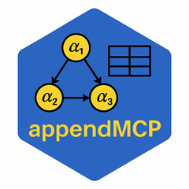

Build npsurvSS arm objects from appendMCP distribution tables
dot-build_wlr_arms.RdConstructs the arm0 (control) and arm1 (test) objects
expected by the gsDesign2 WLR internals. Multiple strata are pooled to a
single effective stratum via .pool_strata_fail_rate().
Arguments
- control
Character name of the control treatment.
- test
Character name of the test treatment.
- enroll_rate
Processed enrollment data frame (arm_rate, duration, index).
- fail_rate
Distribution data frame (treatment, duration, fail_rate, dropout_rate, stratum).
- total_time
Scalar: calendar time at the analysis.